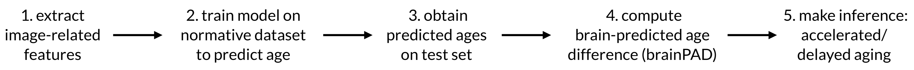

I recently stumbled upon this article by Gervasio Piñeiroa and colleages analyzing the method of model evaluation via plotting observed and predicted \(y\). The authors argue that, in plotting predicted or observed values, observed should be place on the \(y\)-axis vs. predicted on the \(x\)-axis.
Because this article is unfortunately behind paywall, I’m going to show the quick simulation I have reproduced following the same parameter setting as in the paper.
library(tidyverse)
set.seed(1.618)
n_samp <- 60
sim_dats <- tibble(
x = seq.int(n_samp),
e = rnorm(n_samp, 0, 15),
y = x + e,
y_pred = x
)
fit1 <- lm(y_pred ~ y, data = sim_dats)
fit2 <- lm(y ~ y_pred, data = sim_dats)
cowplot::plot_grid(
ggplot(sim_dats, aes(y, y_pred, label = y)) %>%
my_theme(fit1, 'y', 'y_pred'),
ggplot(sim_dats, aes(y_pred, y, label = y)) %>%
my_theme(fit2, 'y_pred', 'y')
)
Here, with the same data points, I plotted predicted versus observed (left) and observed versus predicted (right) and performed a linear regression. This plot is very similar to Fig. 2 presented in Piñeiroa et al., with some stochasticity.
My first reaction to this plot was, “What kind of sorcery is this?!” It seemed so counterintuitive that flipping the \(x\) and \(y\) axes does not simply flip the regression line about the \(y=x\) dashed line. Is this an artifact of training then plotting the same dataset? Does it only apply for linear regression?
I proceeded to run a quick test on a real-world dataset — the Boston dataset — but this time, with separate training and testing sets. In a few lines below, I attached the data, trained a random forest model to predict the median housing value with 13 features on half of the samples and tested on the other half.
dat <- MASS::Boston
train_idx <- sample.int(nrow(dat), nrow(dat)*0.5)
rf <- randomForest::randomForest(medv ~ . , dat, subset = train_idx)
results <- tibble(y = dat[-train_idx, 'medv'],
y_pred = predict(rf, newdata = dat[-train_idx, ]))We see a similar pattern:
fit1 <- lm(y_pred ~ y, data = results)
fit2 <- lm(y ~ y_pred, data = results)
cowplot::plot_grid(
ggplot(results, aes(y, y_pred, label = y)) %>%
my_theme(fit1, 'y', 'y_pred', 5, 50),
ggplot(results, aes(y_pred, y, label = y)) %>%
my_theme(fit2, 'y_pred', 'y', 5, 50)
)
I’m embarassed to admit that only after seeing this second plot did I stop to really think. I realized that, when we perform a regression, we’re minimizing the sum squared distance between \(y\) and \(\hat{y}\) in the vertical direction, not the distance to the regression line.
{{%mn%}}Piñeiroa et al. also recommended root mean squared deviation (RMSD) as a better performance evaluation metric compared to RMSE. However, I don’t think the authors have the same definitions of RMSE and RMSD as standard literature. Most studies, including the ones cited in the paper, do not distinguish RMSE and RMSD. The formula the authors use for RMSE is somehow not symmetric: \(RMSE(\hat{y}, y) \neq RMSE(y, \hat{y})\). And finally, instead of dividing by \(n\), the sum in the formula for RMSD (Eq. 10) is divded by \(n-1\). Strange.{{%/mn%}}Some of us might be thinking, “So what? Does it matter? After plotting, I will use mean squared error to evaluate my model anyway”. That’s fine. But it does matter if we want to evaluate our model performance based on slope and \(y\)-intercept. I don’t often do this, but according to Piñeiroa and colleagues, a number of ecological modelling studies do. In my work, I often compute \(R^2\), root mean squared error (RMSE) and mean absolute error to compare my model’s performance to others’.
To recap, most of the time, it probably does not matter unless we were to infer further from the slope and intercept of the fit. However, I will show below what the implications are for a specific kind of studies, where plotting \(\hat{y}\) versus \(y\) helped me identify the issue.
First off, here’s a tweet from my favorite statistician/data scientist Kareem Carr:
me: I discovered a new statistical law that says that all jokes on twitter are based on other jokes on twitter
friend: that’s really cool! what do you call it?
me: *slowly takes off sun glasses* regression to the meme {{%mn%}}OK sorry this tweet does not improve our understanding, but I had to do it.{{%/mn%}}
What you see in the above plots on the left hand side, where the green regression line’s slope is less than 1, is the “overestimation of the low values and underestimation of the high values” — a universal phenomenon called “regression to the mean”. {{%mn%}}In this context, “regression to the mean” means the age of younger individuals tends to be overestimated and the age of older individuals tends to be underestimated.{{%/mn%}} In a recent study, Rayus Kuplicki and I together with our colleagues investigated the phenomenon of “regression to the mean” in the context of brainPAD (brain Predicted Age Difference). {{%mn%}}Another synonym of brainPAD is brainAGE (brain age gap estimate), which was what we used in this paper. However, brainAGE induces the confusion of the absolute predicted age vs. the “gap”. Therefore, I will use brainPAD from now on.{{%/mn%}} To give you a little bit of background, the general framework for using neuroimage features to predict age of an individual is as follows:

A crucial step in this framework is step 4, where brainPAD = predicted age - chronological age. So, ultimately, brainPAD is the residual of the regression of predicted age on real age. Hence, because of regression to the mean, brainPAD is automatically associated with age. This is problematic for step 5, when brainPAD is regressed on other variables of interest, e.g., brainPAD ~ BMI. Specifically, if, say, BMI positively correlates with age, this regression could result in an inflated coefficient showing having high BMI decreases brainPAD.
No. The problem is not how we take the difference. The problem lies at the fact the covariates (e.g., BMI) are correlated with age, not predicted age. Therefore, age will always be on the right hand side of the equation and get regressed on. The effect stays.
In any event, had we not plotted predicted age vs. chronological age, I am not sure we would have found this problematic behavior of brainPAD. After many Venn diagrams of shared variances between age, predicted age and other variables of interest, our suggestion is to include chronological age as a covariate in this regression.
Do you have another suggestion? Should we rescale the variables? Is there a better way to compute brainPAD? Perhaps divide the difference by absolute age? If you would like to see more detailed analyses or suggest new ideas, please head over to the paper (open access) and leave me a comment!